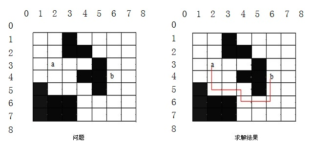
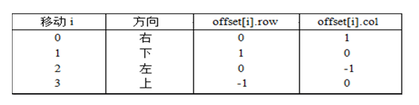
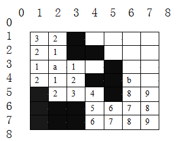

分支限界法常以广度优先或以最小耗费（最大效益）优先的方式搜索问题的解空间树。
(1) 在分支限界法中，每一个活结点只有一次机会成为扩展结点。活结点一旦成为扩展结点，就一次性产生其所有儿子结点。
(2) 在这些儿子结点中，导致不可行解或导致非最优解的儿子结点被舍弃，其余儿子结点被加入活结点表中。
(3) 此后，从活结点表中取下一结点成为当前扩展结点，并重复上述结点扩展过程。这个过程一直持续到找到所需的解或活结点表为空时为止。
5.1 基本概念
类似于回溯法，也是一种在问题的解空间树T上搜索问题解的算法，但在一般情况下，分支限界法与回溯法的求解目标不同。回溯法的求解目标是找出T中满足约束条件的所有解，而分支限界法的求解目标则是找出满足约束条件的一个解，或是在满足约束条件的解中找出使某一目标函数值达到极大或极小的解，即在某种意义下的最优解。
5.2 常见两种方法
（1）队列式(FIFO)分支限界法
按照队列先进先出（FIFO）原则选取下一个节点为扩展节点。
（2）优先队列式分支限界法
按照优先队列中规定的优先级选取优先级最高的节点成为当前扩展节点。
5.3 解空间树的动态搜索
由于求解目标不同，导致分支限界法与回溯法在解空间树T上的搜索方式也不相同。回溯法以深度优先的方式搜索解空间树T，而分支限界法则以广度优先或以最小耗费优先的方式搜索解空间树T。
分支限界法的搜索策略：在扩展结点处，先生成其所有的儿子结点（分支），然后再从当前的活结点表中选择下一个扩展对点。为了有效地选择下一扩展结点，以加速搜索的进程，在每一活结点处，计算一个函数值（限界），并根据这些已计算出的函数值，从当前活结点表中选择一个最有利的结点作为扩展结点，使搜索朝着解空间树上有最优解的分支推进，以便尽快地找出一个最优解。
分支限界通过相关计算决定接下来应该选择哪个结点进行搜索，并用一个优先链表保存那些已经生成但还未查看的结点，所以用堆来表示比较理想。
分支限界法常以广度优先或以最小耗费（最大效益）优先的方式搜索问题的解空间树。问题的解空间树是表示问题解空间的一棵有序树，常见的有子集树和排列树。在搜索问题的解空间树时，分支限界法与回溯法对当前扩展结点所使用的扩展方式不同。在分支限界法中，每一个活结点只有一次机会成为扩展结点。活结点一旦成为扩展结点，就一次性产生其所有儿子结点。在这些儿子结点中，那些导致不可行解或导致非最优解的儿子结点被舍弃，其余儿子结点被子加入活结点表中。此后，从活结点表中取下一结点成为当前扩展结点，并重复上述结点扩展过程。这个过程一直持续到找到所求的解或活结点表为空时为止。
（1）回溯求解0/1背包问题，虽剪枝减少了搜索空间，但整个搜索按深度优先机械进行，是盲目搜索（不可预测本结点以下的结点进行的如何）。
（2）回溯求解TSP也是盲目的（虽有目标函数，也只有找到一个可行解后才有意义）
（3）分支限界法首先确定一个合理的限界函数，并根据限界函数确定目标函数的界[down, up]；然后按照广度优先策略遍历问题的解空间树，在某一分支上，依次搜索该结点的所有孩子结点，分别估算这些孩子结点的目标函数的可能取值（对最小化问题，估算结点的down，对最大化问题，估算结点的up）。如果某孩子结点的目标函数值超出目标函数的界，则将其丢弃（从此结点生成的解不会比如今已得的更好），否则入待处理表。
5.4 设计思路
设求解最大化问题，解向量为X=(x1,…,xn)，xi的取值范围为Si，|Si|=ri。在使用分支限界搜索问题的解空间树时，先根据限界函数估算目标函数的界[down, up]，然后从根结点出发，扩展根结点的r1个孩子结点，从而构成分量x1的r1种可能的取值方式。
对这r1个孩子结点分别估算可能的目标函数bound(x1)，其含义：以该结点为根的子树所有可能的取值不大于bound(x1)，即：
bound(x1)≥bound(x1,x2)≥…≥ bound(x1,…,xn)
若某孩子结点的目标函数值超出目标函数的下界，则将该孩子结点丢弃；否则，将该孩子结点保存在待处理结点表PT中。
再取PT表中目标函数极大值结点作为扩展的根结点，重复上述。
直到一个叶子结点时的可行解X=(x1,…,xn)，及目标函数值bound(x1,…,xn) 。
5.5 搜索策略
在当前节点（扩展节点）处，先生成其所有的子节点（分支），然后再从当前的活节点（当前节点的子节点）表中选择下一个扩展节点。为了有效地选择下一个扩展节点，加速搜索的进程，在每一个活节点处，计算一个函数值（限界），并根据函数值，从当前活节点表中选择一个最有利的节点作为扩展节点，使搜索朝着解空间上有最优解的分支推进，以便尽快地找出一个最优解。分支限界法解决了大量离散最优化的问题。
5.6 回溯法和分支限界法的区别
回溯法深度优先搜索堆栈活结点的所有可行子结点被遍历后才被从栈中弹出找出满足约束条件的所有解。
分支限界法广度优先或最小消耗优先搜索队列、优先队列每个结点只有一次成为活结点的机会找出满足约束条件的一个解或特定意义下的最优解。
5.7 实例分析
布线问题：印刷电路板将布线区域划分成n×m个方格阵列，要求确定连接方格阵列中的方格a的中点到方格b的中点的最短布线方案。在布线时，电路只能沿直线或直角布线，为了避免线路相交，已布了线的方格做了封锁标记，其他线路不允许穿过被封锁的方格。
一个7×7方格阵列布线如下：

起始位置是a =(3,2),目标位置是b =(4,6),阴影方格表示被封锁的方格。当算法搜索到目标方格b时，将目标方格b标记为从起始位置a到b的最短距离。此例中， a到b的最短距离是9。
算法思路：
布线问题的解空间是一个图，则从起始位置a开始将它作为第一个扩展结点。与该扩展结点相邻并可达的方格成为可行结点被加入到活结点队列中，并且将这些方格标记为1，即从起始方格a到这些方格的距离为1。接着，从活结点队列中取出队首结点作为下一个扩展结点，并将与当前扩展结点相邻且未标记过的方格标记为2，并存入活结点队列。这个过程一直继续到算法搜索到目标方格b或活结点队列为空时为止。
在实现上述算法时，
（1） 定义一个表示电路板上方格位置的类Position。
它的2个成员row和col分别表示方格所在的行和列。在方格处，布线可沿右、下、左、上4个方向进行。沿这4个方向的移动分别记为0，1，2，3。下表中，offset[i].row和offset[i].col(i= 0,1,2,3)分别给出沿这4个方向前进1步相对于当前方格的相对位移。

（2） 用二维数组grid表示所给的方格阵列。
初始时，grid[i][j] = 0, 表示该方格允许布线，而grid[i][j] = 1表示该方格被封锁，不允许布线。
算法图解：

代码贴出来：
#include<iostream>
#include<iomanip>
#include<queue>
using namespace std;
typedef struct Position
{
int row;
int col;
}Posi;
// find the shortest path for the grid
bool FindPath(Posi start,Posi finish,int & PathLen,
int **&grid,Posi *& path,int n,int m)
{
// if the start position is the finish position
if((start.row == finish.row) && (start.col == finish.col))
{
PathLen = 0;
return true;
}
Position offset[4];
offset[0].row = -1; // up
offset[0].col = 0;
offset[1].row = 1; // down
offset[1].col = 0;
offset[2].row = 0; // left
offset[2].col = -1;
offset[3].row = 0; // right
offset[3].col = 1;
Posi here,nbr; // new born
here.row = start.row;
here.col = start.col;
int NumOfNbrs = 4; // ajacent position;
grid[start.row][start.col] = 2;
// init the start position's length with value 2,
queue<Posi> Q;
do
{
for(int i = 0;i < NumOfNbrs;i++)
{
nbr.row = here.row + offset[i].row;
nbr.col = here.col + offset[i].col;
if(grid[nbr.row][nbr.col] == 0)
// this position haven't been visited
{
grid[nbr.row][nbr.col] = grid[here.row][here.col] + 1;
if((nbr.row == finish.row) && (nbr.col == finish.col))
// find the shortest path
break;
Q.push(nbr);
}
}
if((nbr.row == finish.row) && (nbr.col ==finish.col))
break; // wiring was completed
if(Q.empty()) // if queue is empty
return false; // no result
here = Q.front();
Q.pop();
}while(true);
// traceback the shortest path
PathLen = grid[finish.row][finish.col]-2;
path = new Posi[PathLen];
here = finish;
for(int i = PathLen-1;i >=0;i--)
{
path[i] = here;
for(int j = 0;j < NumOfNbrs;j++)
{
nbr.row = here.row + offset[j].row;
nbr.col = here.col + offset[j].col;
if(grid[nbr.row][nbr.col] == i+2)
// It is the nbr's grid that why the
// grid[nbr.row][nbr.col] can give index of "i+2"
break;
}
here = nbr;// move to the previous node
}
return true;
}
// allocate memory for the grid
void InitGrid(int **&grid,int n,int m)
{
int cells[7][7]={
{0, 0, 1, 0, 0, 0, 0},
{0, 0, 1, 1, 0, 0, 0},
{0, 0, 0, 0, 1, 0, 0},
{0, 0, 0, 1, 1, 0, 0},
{1, 0, 0, 0, 1, 0, 0},
{1, 1, 1, 0, 0, 0, 0},
{1, 1, 1, 0, 0, 0, 0},
};
grid = new int*[n+2];
for(int i = 0;i < n+2;i++)
grid[i] = new int[m+2];
// set the bound
for(int index = 0;index < m+2;index++) // top and bottom
grid[0][index] = grid[n+1][index] = 1;
for(index = 0;index < n+2;index++) // left and right
grid[index][0] = grid[index][m+1] = 1;
for(i = 1;i < n+1;i++)
{
for(int j = 1;j < m+1;j++)
grid[i][j]=cells[i-1][j-1];
}
}
// destroy the resource for the grid
void Destroy(int ** &grid,int n,int m)
{
if(grid != NULL)
{
for(int i = 0;i < n+2;i++)
{
delete [] grid[i];
grid[i] = NULL;
}
delete grid;
grid = NULL;
}
}
void outputMap(int** grid,int n,int m)
{
for(int i = 1;i < n+1;i++)
{
for(int j = 1;j < m+1;j++)
cout<<setw(2)<<grid[i][j]<<" ";
cout<<endl;
}
cout<<endl;
}
int main(void)
{
int m = 0,n = 0;
Posi start,finish;
int PathLength = 0;
Posi * path = NULL;
int ** grid = NULL;
//cout<<"Please input the m and n of the grid:"<<endl;
//cin>>n>>m;
m=7;n=7;
//cout<<"Please input the start position:"<<endl;
//cout<<"start:row =";
//cin>>start.row;
start.row = 3;
//cout<<"start:col =";
//cin>>start.col;
start.col = 2;
//cout<<"Please input the finish position:"<<endl;
//cout<<"finish:row =";
//cin>>finish.row;
finish.row = 4;
//cout<<"finish:col =";
//cin>>finish.col;
finish.col = 6;
InitGrid(grid,n,m);
cout<<"the map resource:"<<endl;
outputMap(grid,m,n);
FindPath(start,finish,PathLength,grid,path,n,m);
cout<<"The shortest path of wiring is :"<<PathLength<<endl;
cout<<"The path if follow:"<<endl;
for(int index = 0;index < PathLength;index++)
{
cout<<"("<<path[index].row<<","<<path[index].col<<")";
if(index < PathLength-1)
cout<<"-->";
if(index>1 && (index+1)%3==0) cout<<endl;
}
cout<<endl;
outputMap(grid,m,n);
// Destory the resource of grid
Destroy(grid,n,m);
// release the path's resource
if(path != NULL)
{
delete [] path;
path = NULL;
}
getchar();
return 0;
}
/*
the map resource:
0 0 1 0 0 0 0
0 0 1 1 0 0 0
0 0 0 0 1 0 0
0 0 0 1 1 0 0
1 0 0 0 1 0 0
1 1 1 0 0 0 0
1 1 1 0 0 0 0
The shortest path of wiring is :9
The path if follow:
(3,3)-->(4,3)-->(5,3)-->
(5,4)-->(6,4)-->(6,5)-->
(6,6)-->(5,6)-->(4,6)
5 4 1 0 0 0 0
4 3 1 1 0 0 0
3 2 3 4 1 0 0
4 3 4 1 1 11 0
1 4 5 6 1 10 0
1 1 1 7 8 9 10
1 1 1 8 9 10 11
*/